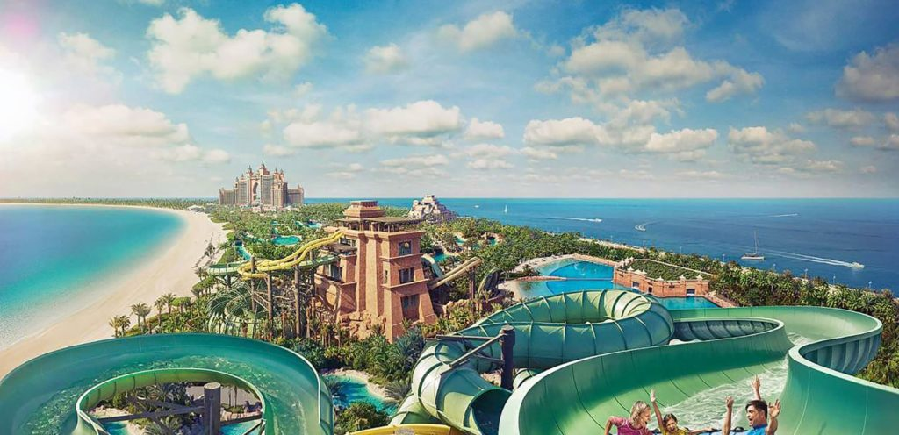
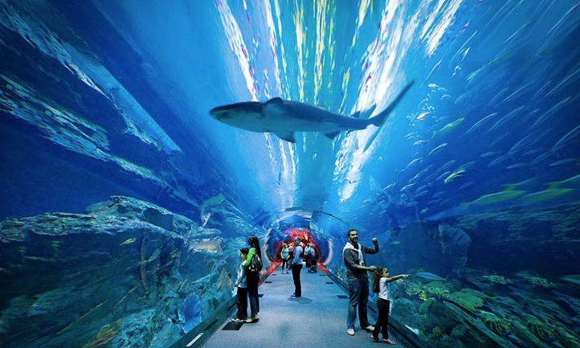
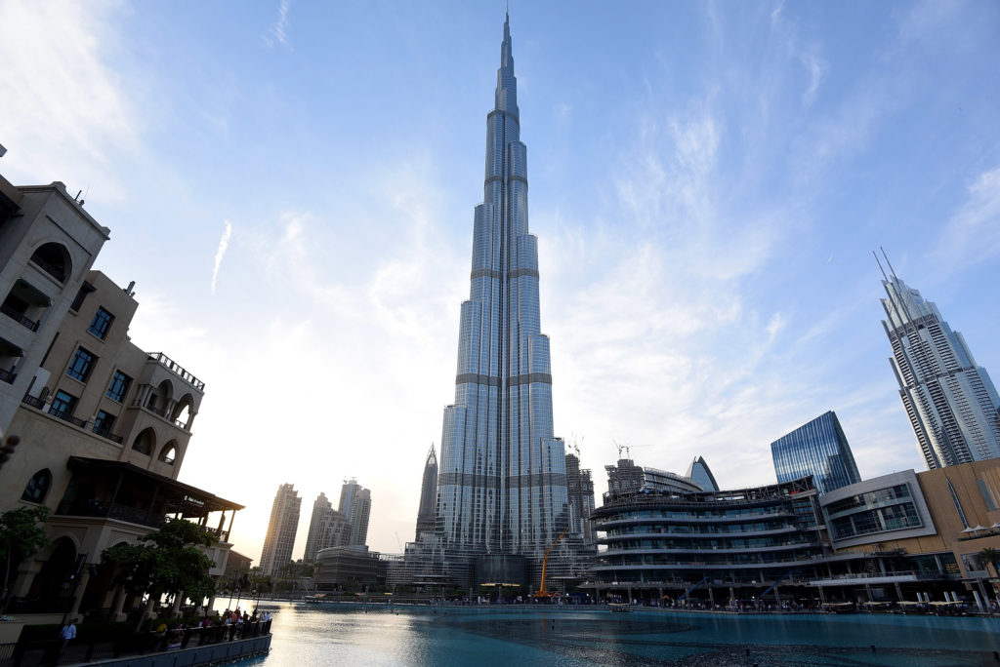
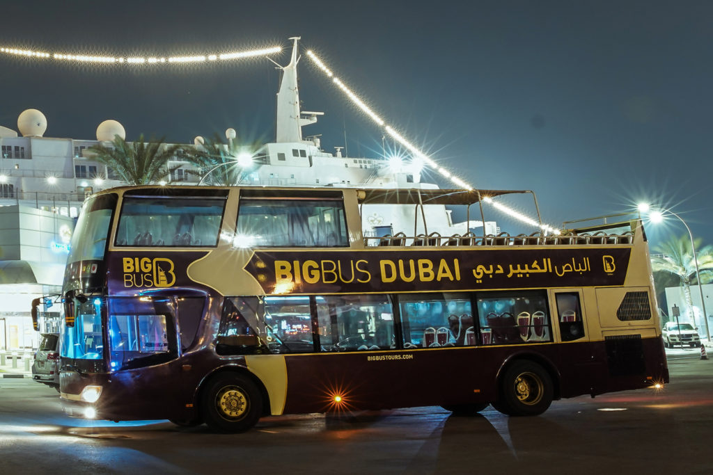
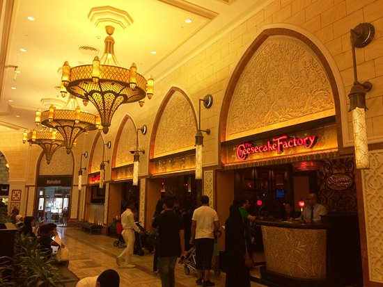
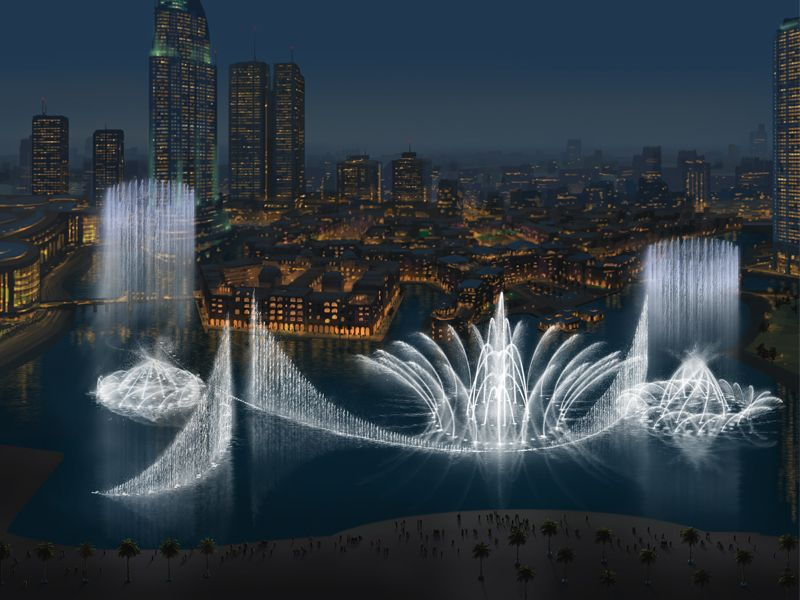
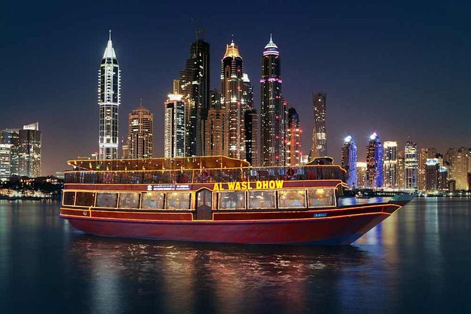
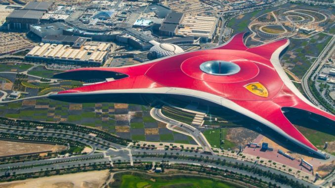
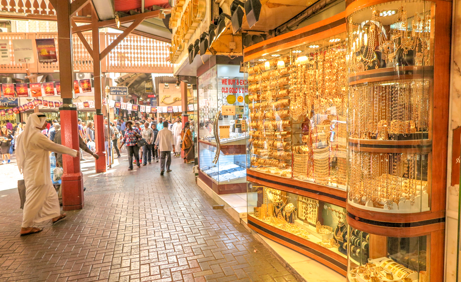
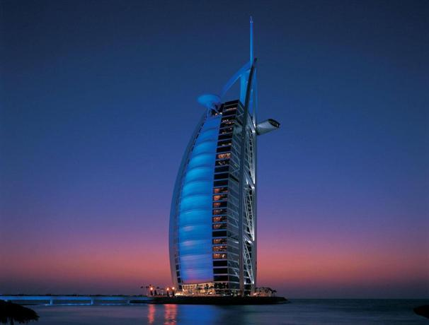

Experience the beauty of endless sand stretch and beautiful oases. Desert safari is an add on that will make the trip memorable. You can choose evening or overnight safari for maximum fun, where you can enjoy a dune bash on a luxury 4×4 SUV followed by activities such as sandboarding, camel ride, henna painting, sunset view, BBQ dinner and more. Do not miss out on the belly dancing in the night.
2. One day at Atlantis Theme Park

Unlock this beautiful trip to the adventurous water park. Take a day to appreciate this human-made wonder The Atlantis. It is a breath-taking experience right from dolphin bay, Sea Lion Point, Aqua-venture water rides lost chamber and everything else.
3. Lost Chambers Aquarium

The beautiful aquarium can hold more than 65,000 marine animals, including seahorse, jellyfishes and what not! As a treat, you will get to see the world’s largest fish, Arapaima. Make the best of your trip by making sure you visit this beautiful place.
4. SKY 148, Burj Khalifa

If you are a person with zero fear of height and love skyscrapers, this is your place to be. It is the world’s tallest building of 2717ft and was opened to the public since 2010. Visiting this place has given me one of the best memories of all time. I would strongly recommend every single person visiting Dubai to go to this place. It is one of the most astonishing architectural marvels in recent times. Take a trip to the 148th floor of this building to fill your books with the best memories of views and experience.
5. Night Tour with BIG-BUS

Book a night tour with BIG-BUS to experience the nightlife in Dubai with all those sparkling lights and beautiful views. This comes with live commentary. They explain the wonders of this place, along with some amazing facts that will blow your mind. This BIG-BUS night ride is for 2.5 hours that starts from five different locations. You can choose the one that is closer to your stay. This tour covers the maximum places.
6. Cheesecake factory at Dubai Mall

Do grab a table at the Cheesecake Factory in the Dubai Mall. After all that exhausting shopping who wouldn’t want to take a bite. If you are a foodie, this is the right choice. This place offers over 200 varieties of food items right from pizzas, steaks, salads, sandwiches, appetizers and what not!
7. Fountain Show @ Dubai Mall

Witness the world’s largest dancing fountain at the Dubai Mall. This magical show comes with soothing music to add the right feel to the swaying water. The water fountain can be viewed even from 20 miles apart. It has about 1.5 million lumens of incandescent lights, and the fountain height is up to 500 feet. The show begins at 6:00 PM and is till 11:00 PM. Also, there are two shows at 1:00 PM and 1:30 PM.
8. Marina Cruise Dinner with performance

To enjoy the spectacular skyline views of Dubai during the night, you must try Marina Cruise five star dinner. The subtle breeze from the gulf is worth the experience. Take the most of the leisurely designed open upper deck. Traditional Turkey originated dance called Tanura is excellent to watch. This is performed by a man who spins non-stop and makes different patterns using color robes.
9. Ferrari World

Add a dash of action and thrill to your trip by visiting the Ferrari World. It is the largest indoor theme park in the world. You can see over 20 Ferrari Inspired rides. If you are a car lover, the Formula Rossa is a must-try as it is said to be the world’s fastest ride. For those who are okay in spending, you can avail VIP passes which is a little costlier than the usual tickets but worth every single penny.
10. Gold Souk

Are you a jewel lover? Do you love stacking your gold box? If so, this is what you have to do when you are in Dubai. Gold Souk located in the heart of Dubai’s business area called Deira is the hub to shop all gold jewelry along with various other precious stones and metals like silver and diamonds. Here you can also find art jewelry designs that you will not find anywhere else. Choose from this spectacular and wide range of articles to satisfy your guilty pleasure.
11. Burj Al Arab Hotel

Pamper yourself with the best stay in Dubai with breath-taking luxuries. Take a stay at the world’s tallest seven-star hotel. Burj Al Arab is an exciting place to be and the most serene and luxurious one. This iconic place has got some unbeatable cuisines and offers excellent scenic views. It holds the world’s tallest tennis court and has a golfing yard and an adventure park along with squash court and Jacuzzi. The spa here is exceptionally rejuvenating and relaxing.